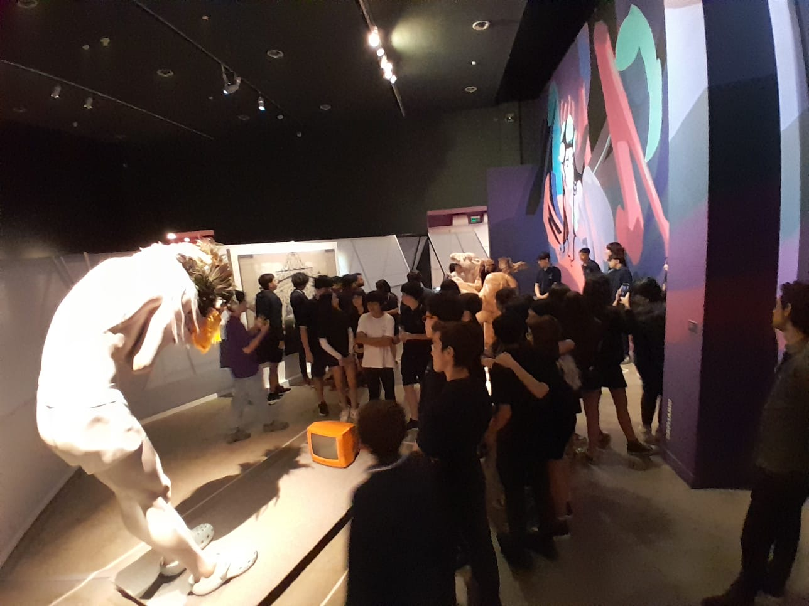

El día jueves 7 de noviembre los alumnos de 1º A y B acompañados de sus profesores Sebastián Heudtlass , Fernando Fariña y Belén Salaberry realizaron una interesante visita al Centro Cultural Recoleta. A las 10:00 hs nos recibió la guía quien nos acompañó durante toda la visita dentro del mismo. Visitamos los todos los espacios internos donde hay exposiciones artísticas itinerantes y los externos con propuestas para adolescentes y jóvenes. Fue muy divertida.
